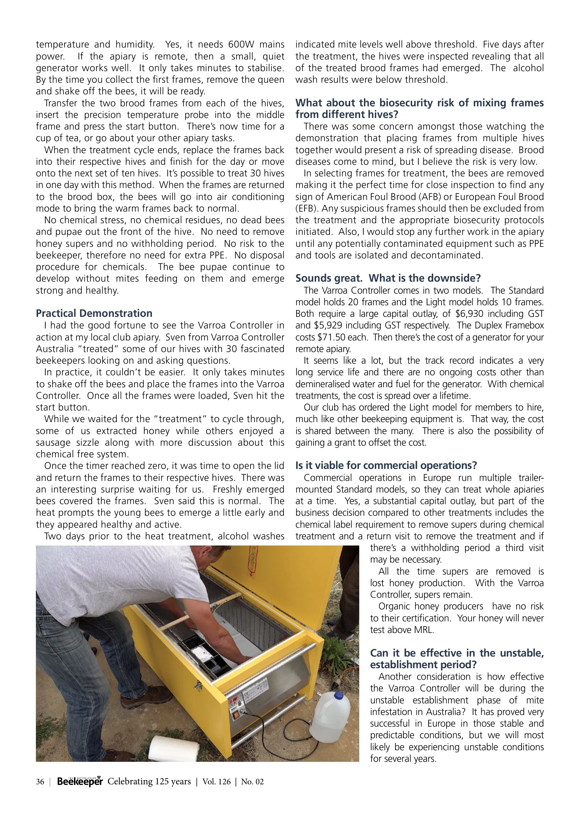

temperature and humidity. Yes, it needs 600W mains
power. If the apiary is remote, then a small, quiet
generator works well. It only takes minutes to stabilise.
By the time you collect the first frames, remove the queen
and shake off the bees, it will be ready.
Transfer the two brood frames from each of the hives,
insert the precision temperature probe into the middle
frame and press the start button. There’s now time for a
cup of tea, or go about your other apiary tasks.
When the treatment cycle ends, replace the frames back
into their respective hives and finish for the day or move
onto the next set of ten hives. It’s possible to treat 30 hives
in one day with this method. When the frames are returned
to the brood box, the bees will go into air conditioning
mode to bring the warm frames back to normal.
No chemical stress, no chemical residues, no dead bees
and pupae out the front of the hive. No need to remove
honey supers and no withholding period. No risk to the
beekeeper, therefore no need for extra PPE. No disposal
procedure for chemicals. The bee pupae continue to
develop without mites feeding on them and emerge
strong and healthy.
Practical Demonstration
I had the good fortune to see the Varroa Controller in
action at my local club apiary. Sven from Varroa Controller
Australia “treated” some of our hives with 30 fascinated
beekeepers looking on and asking questions.
In practice, it couldn’t be easier. It only takes minutes
to shake off the bees and place the frames into the Varroa
Controller. Once all the frames were loaded, Sven hit the
start button.
While we waited for the “treatment” to cycle through,
some of us extracted honey while others enjoyed a
sausage sizzle along with more discussion about this
chemical free system.
Once the timer reached zero, it was time to open the lid
and return the frames to their respective hives. There was
an interesting surprise waiting for us. Freshly emerged
bees covered the frames. Sven said this is normal. The
heat prompts the young bees to emerge a little early and
they appeared healthy and active.
Two days prior to the heat treatment, alcohol washes
indicated mite levels well above threshold. Five days after
the treatment, the hives were inspected revealing that all
of the treated brood frames had emerged. The alcohol
wash results were below threshold.
What about the biosecurity risk of mixing frames
from different hives?
There was some concern amongst those watching the
demonstration that placing frames from multiple hives
together would present a risk of spreading disease. Brood
diseases come to mind, but I believe the risk is very low.
In selecting frames for treatment, the bees are removed
making it the perfect time for close inspection to find any
sign of American Foul Brood (AFB) or European Foul Brood
(EFB). Any suspicious frames should then be excluded from
the treatment and the appropriate biosecurity protocols
initiated. Also, I would stop any further work in the apiary
until any potentially contaminated equipment such as PPE
and tools are isolated and decontaminated.
Sounds great. What is the downside?
The Varroa Controller comes in two models. The Standard
model holds 20 frames and the Light model holds 10 frames.
Both require a large capital outlay, of $6,930 including GST
and $5,929 including GST respectively. The Duplex Framebox
costs $71.50 each. Then there’s the cost of a generator for your
remote apiary.
It seems like a lot, but the track record indicates a very
long service life and there are no ongoing costs other than
demineralised water and fuel for the generator. With chemical
treatments, the cost is spread over a lifetime.
Our club has ordered the Light model for members to hire,
much like other beekeeping equipment is. That way, the cost
is shared between the many. There is also the possibility of
gaining a grant to offset the cost.
Is it viable for commercial operations?
Commercial operations in Europe run multiple trailer-
mounted Standard models, so they can treat whole apiaries
at a time. Yes, a substantial capital outlay, but part of the
business decision compared to other treatments includes the
chemical label requirement to remove supers during chemical
treatment and a return visit to remove the treatment and if
there’s a withholding period a third visit
may be necessary.
All the time supers are removed is
lost honey production. With the Varroa
Controller, supers remain.
Organic honey producers have no risk
to their certification. Your honey will never
test above MRL.
Can it be effective in the unstable,
establishment period?
Another consideration is how effective
the Varroa Controller will be during the
unstable establishment phase of mite
infestation in Australia? It has proved very
successful in Europe in those stable and
predictable conditions, but we will most
likely be experiencing unstable conditions
for several years.
36 |
Celebrating 125 years | Vol. 126 | No. 02